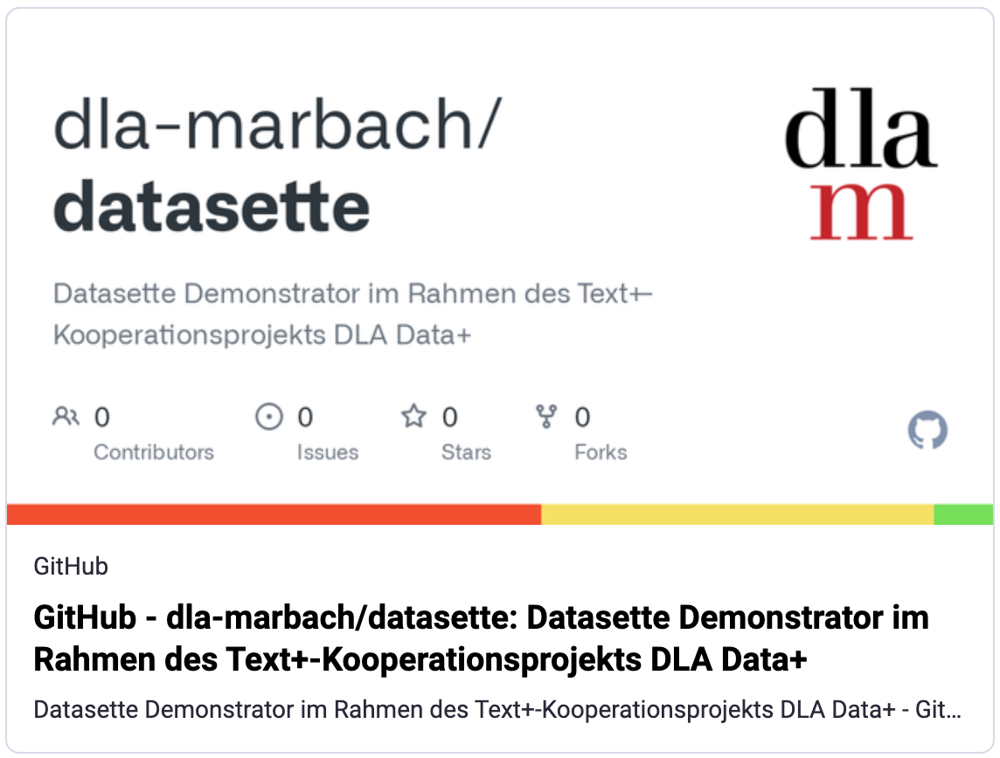

Für das DLA Marbach durfte ich letztes Jahr Erfahrungen mit Datasette sammeln. Wir haben uns vor allem die Lite-Version angeschaut, die mit WebAssembly lokal im Browser läuft ohne dass ein Server betrieben werden muss. Hier die Evaluationsergebnisse bei GitHub: https://github.com/dla-marbach/datasette. Ist das geeignet für die Präsentation von kleinen Metadaten-Sammlungen? Feedback gerne im Forum https://metadaten.community/t/datasette-lite-fuer-webpraesentation-von-metadaten/705.
